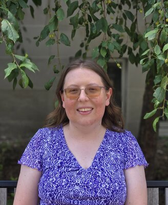

I'm Anna Brosowsky, an NSF postdoc in the Math Department at the University of Nebraska--Lincoln. My current research interests lie in positive characteristic commutative algebra, especially F-singularities. I am also working towards incorporating combinatorial ideas into my work.
I got my PhD in math from the University of Michigan in 2024, with advisor Karen Smith. I graduated from Cornell with a BA in Mathematics in Spring 2018.
Email: abrosowsky2@unl.edu
Office: Avery Hall 234